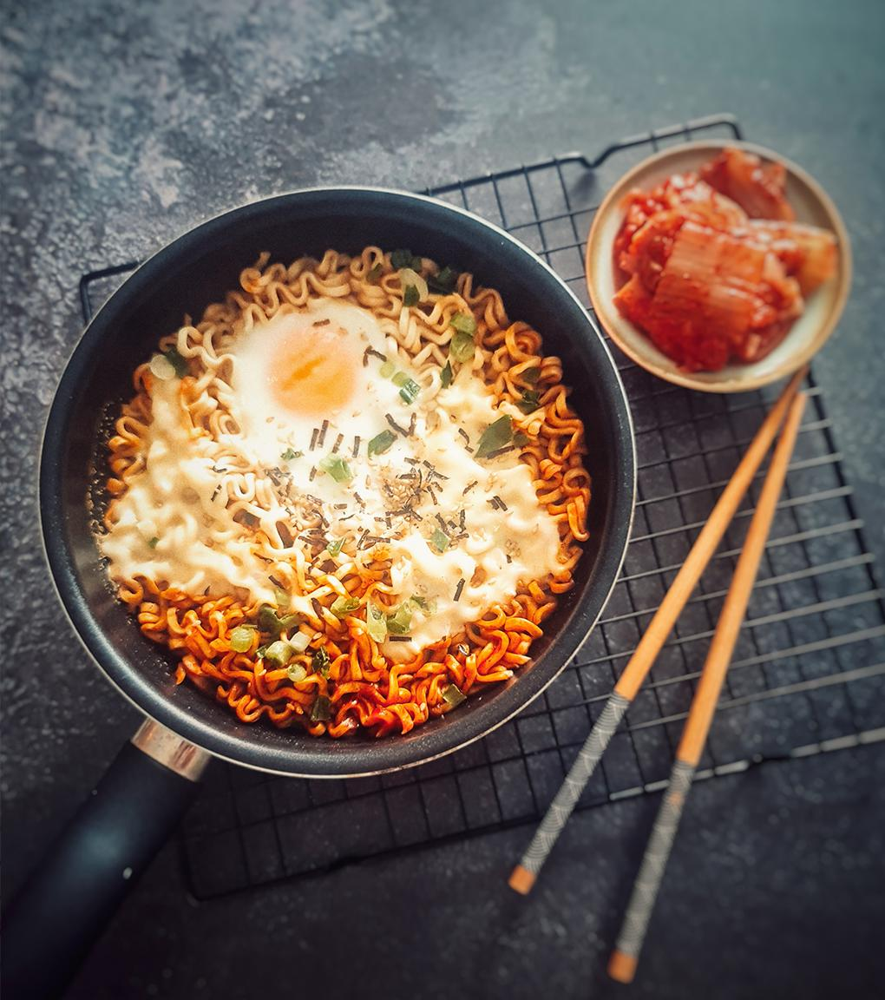

Kujirai Ramen

Description
Kujirai ramen is a rich and flavorful Japanese noodle soup featuring a deep, umami-packed broth made from pork bones, topped with tender chashu, green onions, nori, and a perfectly soft-boiled egg, delivering a comforting and satisfying meal.
Ingredients
- Ramen noodles (fresh or dried)
- Vegetable broth (or a kombu dashi)
- Soy sauce (or shoyu)
- Mirin (sweet rice wine)
- Miso (for added flavor)
- Green onions (sliced)
- Soft-boiled eggs (or tofu for a vegan option)
- Sesame oil
- Sesame seeds (toasted)
Steps
- Make the Broth: Simmer vegetable broth with soy sauce, mirin, garlic, and ginger for about 15-20 minutes.
- Cook the Noodles: Prepare the ramen noodles according to package instructions.
- Prep Toppings: Slice green onions and any other desired toppings.
- Assemble: Place the cooked noodles in a bowl and pour the hot broth over them.
- Add Toppings: Top with green onions, nori, and soft-boiled eggs then serve hot.